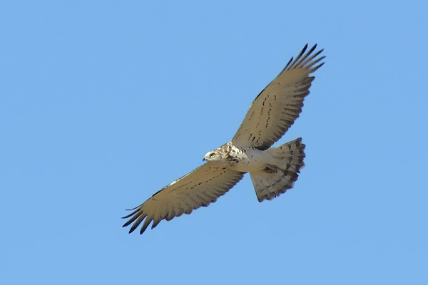

FALCONIDOS
Falconidae
Falconidae
Características principales

Los falcónidos (Falconidae) son una familia de aves falconiformes. Incluye aproximadamente 60 especies, como los halcones, cernícalos o alcotanes. A diferencia de los Accipitriformes, además de las garras usan el pico para matar a sus presas, para lo que disponen de una protuberancia córnea en el pico superior, cerca de la comisura, conocida como “diente de halcón”.
Naturaleza

Los halcones y caracaras son unas aves de presa de tamaño medio o pequeño, variando desde el pequeño tamaño del halconcillo indonesio, que pesa solo unos 35 g, hasta el halcón gerifalte, que puede llegar a pesar hasta 2100 g. Tiene unas garras con una pronunciada forma de garfio, y una excelente vista. El plumaje normalmente está compuesto de plumas de color marrón, castaño, blanco, negro y gris. Hay pocas diferencias entre los plumajes de las hembras y de los machos, aunque unas pocas especies tienen dimorfismo sexual en su plumaje.
Se diferencian de otros Falconiformes en que matan a sus presas con el pico en vez de con sus garras.